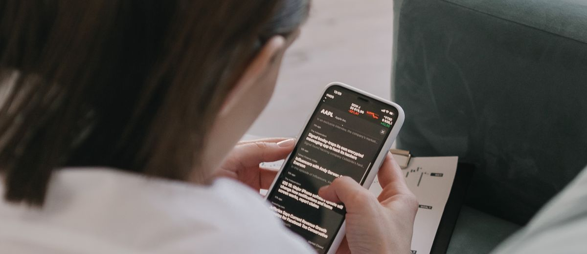

Instagram para medicina estética que sí cumple la normativa

Instagram es un escaparate perfecto para la medicina estética… y un campo minado si no conoces las reglas. La publicidad sanitaria está regulada, y el clásico «antes y después» tiene límites claros. La buena noticia: puedes generar muchísima confianza sin arriesgar tu licencia. Vamos a ello.
Primero, lo importante: qué NO puedes hacer
Las normas varían según el país y el colegio profesional, pero hay principios comunes en la publicidad sanitaria que conviene respetar siempre:
- No prometas resultados garantizados ni uses lenguaje que genere expectativas irreales.
- Cuidado con los antes/después: en muchas regiones están restringidos o directamente prohibidos como reclamo publicitario. Consulta la normativa de tu colegio.
- No banalices el acto médico («ofertón de bótox», packs tipo cupón) ni uses el precio como gancho principal.
- Cualquier testimonio o imagen de paciente necesita consentimiento informado por escrito y específico para redes.
La regla de oro: comunica como médico, no como tienda. Educa, no vendas humo. Eso, además, es lo que mejor funciona.
Qué SÍ construye confianza (y agenda)
1. Educación clara sobre cada tratamiento
Explica en qué consiste un tratamiento, para quién sí y para quién no, qué esperar, cómo es la recuperación. El paciente de estética tiene miedo a lo desconocido y a los malos resultados. Si le quitas ese miedo, te elige.
2. Tu criterio médico como marca
Habla de lo que no harías, de cuándo recomiendas esperar, de la importancia de la naturalidad. Mostrar criterio y ética te diferencia de quien solo persigue la venta, y atrae al paciente que busca seguridad.
3. El equipo y la consulta
Enseña quién eres, tu formación, tus instalaciones, los protocolos de seguridad e higiene. En medicina estética el paciente no compra un producto: compra en quién deposita su cara. Que te conozca antes de entrar.
4. Proceso y acompañamiento
Muestra cómo es una primera consulta, cómo valoras cada caso, el seguimiento posterior. Comunicar el cómo transmite profesionalidad sin necesidad de enseñar resultados.
Estructura de contenido semanal
Un reparto sencillo y sostenible:
- Educativo (2 al mes): responde dudas frecuentes.
- Confianza (1 al mes): equipo, instalaciones, formación.
- Criterio/ético (1 al mes): tu visión, la naturalidad, la seguridad.
- Cercanía (continuo en stories): el día a día de la consulta.
Convierte seguidores en pacientes
El contenido genera confianza, pero necesitas un puente a la cita:
- Enlace de WhatsApp o reserva visible en la bio.
- Llamada a la acción suave: «¿Tienes dudas? Escríbenos y te asesoramos sin compromiso.»
- Responde los mensajes directos rápido y con trato humano: ahí se decide la cita.
En resumen
En medicina estética, Instagram no va de enseñar caras retocadas: va de demostrar criterio, seguridad y cercanía. Cumples la normativa, proteges tu prestigio y, paradójicamente, vendes más. La confianza siempre gana a la oferta.